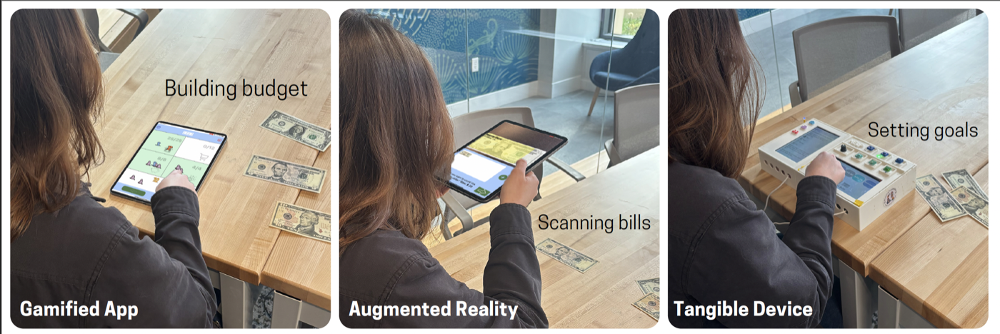

Research Project · Published · CHI 2026
Supporting Money Management among Adults with Down Syndrome: A Multi-Technology Probe Study

Abstract
Financial decision-making is critical to adult autonomy, yet many adults with Down syndrome (AwDS) have limited opportunities or support to develop money management skills, often receiving allowances while caregivers oversee financial obligations. To better understand the experiences AwDS have with budgeting and their support preferences, we designed and prototyped three cash-based budgeting technology probes: a gamified tablet application, a tablet-based augmented reality application, and a custom tangible device. Seven AwDS used all three prototypes to complete simplified money management tasks. Across probes, modality tradeoffs shaped engagement and checking: gamification increased interest but encouraged rushing; AR reduced arithmetic but encouraged users to trust the system's output and skip verification; tangible controls supported participation yet introduced coordination challenges. Error recovery relied on brief, situated prompts linking screen and cash, shaped by prior budgeting and technology experience. These findings point to three design implications: (1) surface budgeting as a stimulating multi-goal puzzle, not just a sequence of steps; (2) design error recovery that connects screen state and real money; (3) support interdependent use without collapsing autonomy.Managing money is important for adult independence, but many adults with Down syndrome have limited chances to practice. We built three different budgeting tools and had seven adults with Down syndrome try all three: a tablet game, an app that uses a phone camera to help with real money, and a hands-on device with physical buttons and controls. Each tool had tradeoffs: the game was fun but made people rush; the camera app reduced math but led people to skip checking their work; the physical device was engaging but tricky to coordinate. Based on what we learned, we suggest three design principles for future money management tools.
The Technology Probes
All three probes used the same core cash-based budgeting task: participants counted a set of bills, set budgeting goals (e.g., rent, food, savings, fun), and allocated bills to each goal using the corresponding tool. By holding the task structure constant, we isolated how each modality shaped engagement, errors, and support needs. All three tools used the same budgeting task: count a set of bills, set spending goals (like rent, food, and savings), and put the right bills toward each goal. We kept the task the same across all three tools so we could focus on how each tool changed the experience.
Gamified Tablet Application Tablet Game
An iPad application that represented each bill denomination as an animated alien character ($1 = purple, $5 = blue, $10 = yellow, $20 = orange). Participants selected an avatar (all designed as characters with Down syndrome), then sorted alien characters into budget boxes using drag-and-drop gameplay. Text instructions were paired with text-to-speech. The gamified app was the longest and most text-heavy probe, requiring arithmetic to combine denominations to fill each budget goal exactly.A tablet app that turned dollar bills into fun alien characters. Each bill type was a different color alien. Participants picked a personal avatar, then dragged aliens into budget boxes. The app was the most game-like and had the most steps, and it required some math to figure out which aliens to put where.
Augmented Reality Tablet Application Camera Money App
An iPad application using real-time computer vision (Apple CreateML) to recognize physical dollar bills through the camera. Participants scanned each bill by tapping a camera button, and the app automatically identified and recorded denomination counts with no arithmetic required. The AR probe was the shortest and offered a single linear task path, directly connecting physical cash to a digital display. A tablet app that used the camera to scan real dollar bills and automatically figure out what they were worth. Participants held up the tablet and tapped a button to scan each bill. The app did the math for them. It was the shortest tool and the easiest in terms of counting.
Custom Tangible Device Hands-On Physical Device
A custom-built two-piece device using Raspberry Pi 4B computers, two 7-inch touchscreens, six large tactile buttons with LEDs, a rotary volume knob, magnetic connectors, and a speaker. The top three buttons controlled the level of assistance (less, medium, more); the bottom three managed audio playback. Unlike the tablet apps, this device kept controls always physically visible, supported multiple task paths, and allowed participants to adjust help levels and replay instructions at any time without restarting. A custom-built two-piece device with real physical buttons, lights, and two small screens. Six large buttons let participants control how much help they got and manage audio instructions. Unlike the tablet apps, this device had physical controls that were always visible and easy to find. Participants could choose their own path through the task and adjust the help level at any time.
Research Questions
-
How do different technology modalities align with AwDS's prior technology and budgeting experiences in a cash budgeting task?Does the tool match people's experience? How well did each tool fit with what participants already knew about technology and money?
-
What forms of support and error correction do AwDS rely on when completing budgeting tasks across modalities?How do people get unstuck? When something went wrong or got confusing, what kinds of help did participants rely on to fix it?
Design Implications
Across probes, engagement and error patterns reflected participants' combined prior technology use and budgeting experience. Participants with higher everyday technology use but limited budgeting experience were most likely to rush and overlook errors; those with stronger budgeting backgrounds pushed back against automation that felt infantilizing. Within interface error-recovery features (summaries, bill visualizations, adjustable assistance) rarely prompted independent checking. Instead error correction emerged primarily through brief, situated researcher prompts calibrated to each participant's confidence and pace. From these patterns we derive three design implications:Across all three tools, how people interacted depended a lot on their past experience with both technology and money. People who used a lot of technology but had less experience budgeting tended to rush and miss mistakes. People with more budgeting experience pushed back if the tool felt too simple. Built-in error-checking features in the tools rarely helped. What actually worked was a person giving a brief, well-timed hint. From this, we came up with three design suggestions:
-
Surface budgeting as a stimulating multi-goal puzzle, not just a sequence of steps. Participants often advanced through screens without recognizing how earlier choices constrained later goals. Budgeting tools should make the budget structure, and cross-goal consequences, visible at moments when choices meaningfully limit future options, rather than presenting each step in isolation. Show the big picture, not just the next step. Many participants moved through the tasks one step at a time without seeing how earlier choices affected later ones. Tools should help people see how all their budget choices connect to each other.
-
Design error recovery that connects screen state and real money. Even when feedback was repeated and visually grounded, participants struggled to know what corrective action to take. Error recovery should structure corrective actions directly, creating unavoidable but non-punitive recovery moments that guide users back into the task without halting progress. Make it easy to catch and fix mistakes without feeling bad about it. Even when the tools showed error messages, participants often didn't know what to do next. Tools should guide people through fixing mistakes in a way that feels helpful, not like a punishment.
-
Support interdependent use without collapsing autonomy. All participants at some point relied on calibrated human support (e.g., reassurance, guiding questions, or targeted hints) rather than always working alone. Budgeting tools should treat interdependence as a first-class design concern: supporting user-initiated help requests, shared budget artifacts, and adjustable guidance that recedes as confidence grows, rather than either removing support entirely or replacing the user's judgment. Make it easy to get help without taking over. Everyone in the study needed some help at some point, but they also wanted to stay in charge of their own decisions. Tools should let people ask for help when they want it and adjust how much support they get, without the tool making decisions for them.